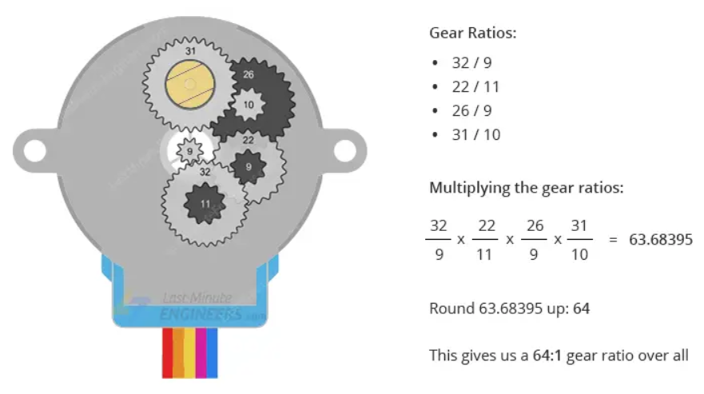
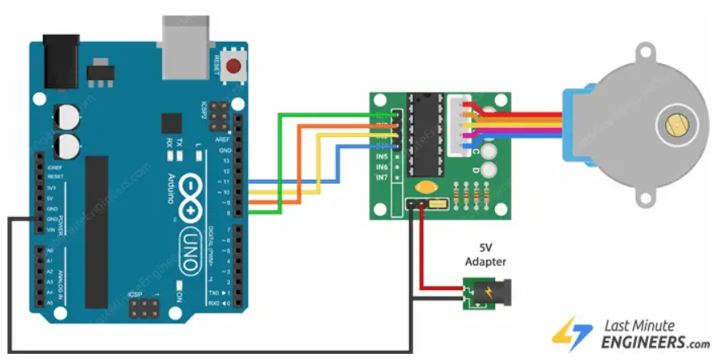
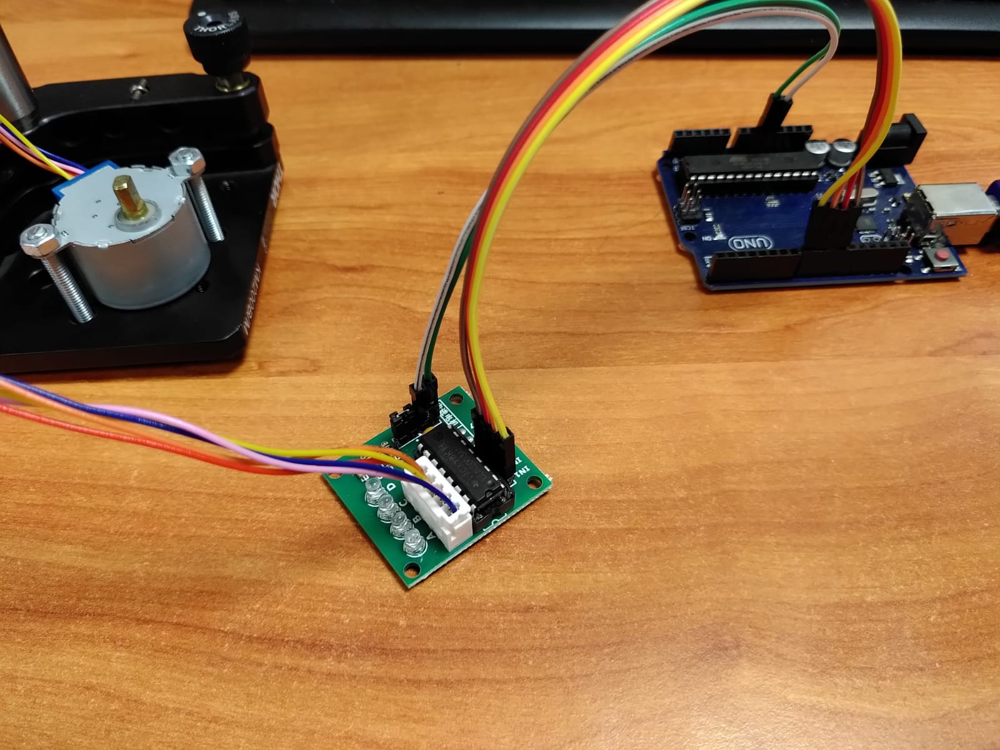

Hardware¶
Items in each section ordered by performance.
Even if you are a hobby builder with low price limits, OTPac offers support for very cheap combination of the hardware:
Sky basics camera for 40$.
Small stepper motor controlled via arduino for the total of less thatn 30$.
Light sources¶
Cameras¶
Sky basics¶
Setup Connect camera via the USB cable and you can right away capture the stream via e.g. OBS studio or in the case of OPTac via cv2 python module.
Camera Features
USB simple setup, possible wi-fi too.
8 bit dynamic range.
RGB chip, so you can separate channels.
Bad objective, focusing out of the optical axis
auto-exposure, so hard to correct and calibrate.
Phonefix¶
Note that the link above contains whlole setup, necessary is only camera and the C mount objective.
This camera has VGA/HDMI interface, which means it serves purely as an output device with intention to connect directly to a screen or other type of display. Your PC HDMI/VGA ports are also output connectors and cannot be used directly to receive/stream data from the phonefix camera.
Therefore, a capture card for streming videos is necessary. Cheap option can be around 20$.
Setup Connect VGA or HDMI camera output to the acquisition card and connect the card via USB to the PC. From this point, camera behaves basically the same as any other USB camera.
Camera features
1920x1080p, RGB chip
50/60 frame rate
Objective good in comparison to the Sky basic camera.
DMK¶
The Imagingsource cameras based on chips from sony (current CMOS workhorse). Different chips with diffrent specs are available in this so called industrial grade cameras. Typical price is few hundrets of $, imagingsource supposedly providing impecable support in terms of interfacing and designing custom applications.
Setup Connect USB to the PC and you are good to go. This camera provides more control via the serial port.
Settings
Camera features (DMK 37BUX252)
monochrome 12 bit dynamic range
upto 120 frame rate
1/1.8 inch chip size
2048 x 1536 px
Global shutter
3.45 um pixel size
Other cameras¶
If you have similar camera with different specs, there is a widget where you can try to interface it with the current methods called:
TODO
Stepper motors¶
Small stepper (28BYJ-48)¶
The most lowcost solution, no need for external power supply, but quite crappy revolution mostly unsuited for OPT. The unwanted feature is that the gear is not 1/64 for the 32 steps but ~63.7 degrees, meaning that full revolution is 2038 steps, nad not 2048, as one (me) would have thought. See the diagram below from the tutorial at lastminuteengineers.com: .
Connection¶
The same tutorial also shows the full circuit connection: .
| Conn. type | arduino side | motor board side | | ———- | ———— | —————- | | Power: | 5V | + | | | GND | - | | Pins | 8-11 | IN1-IN4 in this order |
Connector from the motor to the board has only one orientation possible. Overall this should work:  In the code the pins are assigned in the following manner:
self.board = telemetrix.Telemetrix()
self.motor = self.board.set_pin_mode_stepper(
interface=4,
pin1=8, pin2=10, pin3=9, pin4=11,
)
ST4118M1804-L¶
Nanotec good quality motor (74 Euros, link)

Control board with external 12V power supply is needed, for example Big Easy Driver from here. They have also a hookup guide which I followed.
Wire colours motor: A: brown, A-: orange, B:red, B-:yellow.
Arduino board¶
In order to start with the arduino board, you have to install ‘Arduion IDE’ for a start and testing. Follow the instructions based on your OS from Arduino IDE docs here.
OPTac uses Telemetrix4Arduino library for Python, which you need to install onto your Arduino board via the IDE.
download Telemetrix4Arduino library via Arduino IDE:
Go to Tools -> Manage libraries -> and search telemetrix
Install
You can test its functionality in two ways:
There are several examples (after install) in Examples -> Telemetrix4Arduino -> Telemetrix4Arduino
Or if you have an OPTac source code, in the examples folder are scripts which enable you to play with the board using telemetrix package. The examples are mostly based on the documentation examples of the author of telemetrix Alan Yorinks and can be found here. In particular, to control the stepper motor, telemetrix interfaces AccelStepper library by Mike McCauley.
List of parts¶
For the sake of simplicity (not price, or performance), all parts are from Thorlabs.
Breadboard
LED holder
Transmission mode¶
Photoluminescence mode¶
In addition to the transmission mode, you need:
long pass filters needed to supress scattered excitation light.
filter holder + optomechanics.
Probably a box to block any ambient light.